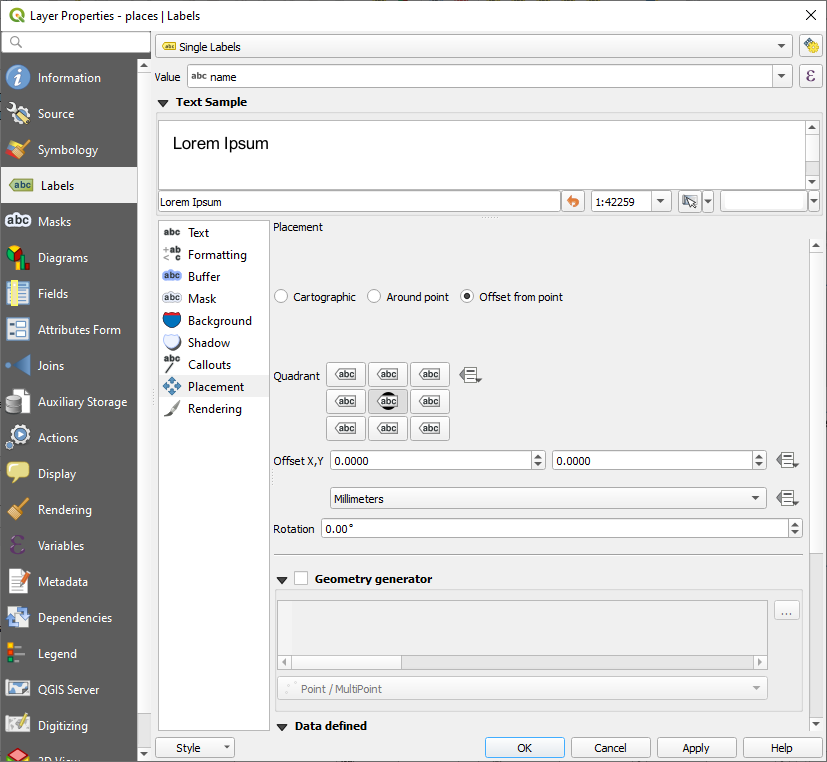
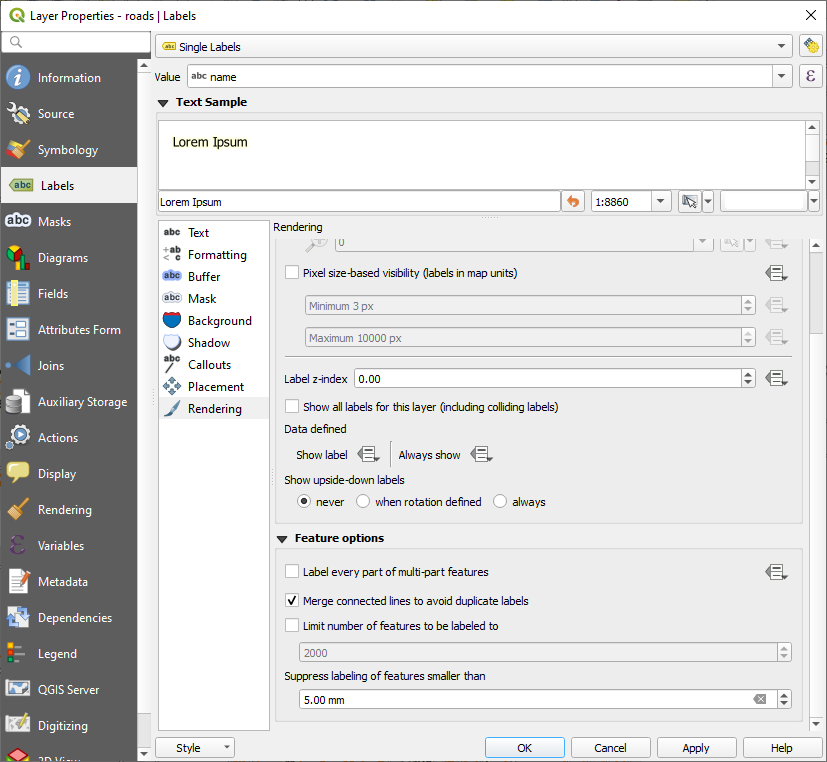
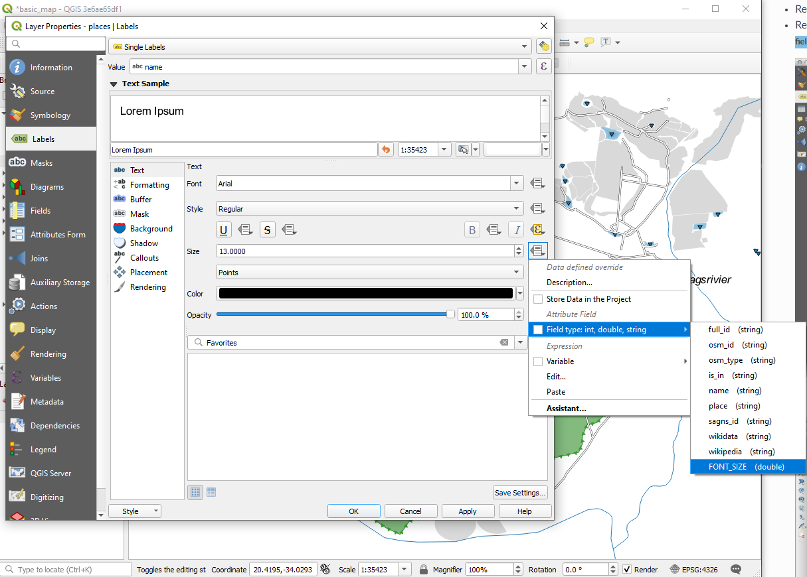

3.2. သင်ခန်းစာ - အညွှန်းများ (Lesson: Labels)
Object တစ်ခုအကြောင်း သတင်းအချက်အလက်တစ်ခုခုကို ပြသရန် မြေပုံပေါ်တွင် label (အညွှန်း) များထည့်သွင်းနိုင်ပါသည်။ Vector layer မှန်သမျှ ၎င်းနှင့်သက်ဆိုင်ရာ label များရှိနိုင်ပါသည်။ ထို label များသည် layer တစ်ခု၏ attribute data များပေါ်တွင် မူတည်ပါသည်။
ဤသင်ခန်းစာအတွက် ရည်မှန်းချက်- Layer တစ်ခုတွင် အသုံးဝင်ပြီး ကြည့်ကောင်းသော label များအသုံးပြုရန်
3.2.1. ★☆☆ လိုက်လုပ်ကြည့်ပါ- Label များအသုံးပြုခြင်း (Follow Along: Using Labels)
ဦးစွာ GUI ထဲတွင်  ခလုတ် မြင်ရအောင်လုပ်ပါ-
ခလုတ် မြင်ရအောင်လုပ်ပါ-
Menu item သို့သွားပါ။
Label Toolbar item ၏ဘေးတွင် အမှန်ခြစ်ဖြစ်နေအောင် လုပ်ထားပါ။ ဖြစ်မနေလျှင် Label Toolbar ပေါ်တွင် click နှိပ်ပါ။
Layers panel ထဲရှိ
placeslayer ကို click နှိပ်ပါ။Layer Styling panel ၏ Labels tab ကိုဖွင့်ရန်
toolbar ခလုတ်ကို နှိပ်ပါ။No Labels မှ
Single Labels သို့ပြောင်းပါ။Label များအတွက် attribute များမှ မည်သည့် field ကို အသုံးပြုမည်ဆိုသည်ကို ရွေးချယ်ပေးရန် လိုပါသည်။ ယခင်သင်ခန်းစာထဲတွင်
namefield သည် ယခုလုပ်ဆောင်မည့်ကိစ္စအတွက် အသင့်တော်ဆုံး field အဖြစ် ဆုံးဖြတ်ခဲ့ပြီးဖြစ်ပါသည်။Value list မှ
nameကိုရွေးချယ်ပါ-
Apply ကိုနှိပ်ပါ။
မြေပုံသည် အောက်ပါပုံစံအတိုင်း label များရှိနေသင့်ပါသည်-

3.2.2. ★☆☆ လိုက်လုပ်ကြည့်ပါ- Label option များကို ပြောင်းလဲခြင်း (Follow Along: Changing Label Options)
အစောပိုင်းက သင်ခန်းစာများတွင် မြေပုံအတွက်ရွေးခဲ့သော style များပေါ်မူတည်၍ label များသည် ကောင်းမွန်စွာ format မဖြစ်ခြင်း၊ point marker များမှ ဝေးလွန်းခြင်း သို့မဟုတ် ထပ်နေခြင်းများ ဖြစ်နေသည်ကိုတွေ့ရနိုင်ပါသည်။
Note
အပေါ်တွင် Layer Styling panel ကိုဖွင့်ရန် Label Toolbar ထဲရှိ ခလုတ်ကို အသုံးပြုခဲ့ပါသည်။ ထိုကဲ့သို့သော label option များကို Layer Styling panel နှင့် Layer Properties dialog မှတဆင့်လည်း ဖွင့်နိုင်ပါသည်။ ဤတွင် Layer Properties dialog ကိုအသုံးပြုပါမည်။
placeslayer ပေါ်တွင် click နှစ်ချက်နှိပ်ပြီး Layer Properties dialog ကိုဖွင့်ပါ။- Labels tab ကို select လုပ်ပါ။
ဘယ်ဘက် option list ထဲတွင် Text ကို select လုပ်ထားပြီး အောက်တွင်ပြထားသည့်အတိုင်း စာသား format ပြင်ဆင်ခြင်း option များကို ပြင်ဆင်ပါ-

Apply ကိုနှိပ်ပါ။
ထို စာလုံးဖောင့် သည် ကြီးနေပြီး အသုံးပြုသူများနှင့်ပိုရင်းနှီးနေနိုင်သော်လည်း ၎င်းကို ဖတ်ရှုရာတွင် ၎င်းစာသား၏အောက်၌ မည်သည့် layer များ ပုံဖော်ပြသထားသည့်အပေါ်မူတည်နေပါသေးသည်။ ထိုအရာကို ဖြေရှင်းရန် Buffer option ကို ကြည့်ကြည့်ပါ။
ဘယ်ဘက် option list မှ Buffer ကို select လုပ်ပါ။
Draw text buffer ၏ဘေးရှိ checkbox ကိုအမှန်ခြစ်ပါ၊ ထို့နောက် အောက်တွင်ပြထားသည့်အတိုင်း option များကိုရွေးချယ်ပါ-
Apply ကိုနှိပ်ပါ။
နေရာကိုပြသသော label များတွင် အရောင် buffer တစ်ခု သို့မဟုတ် border တစ်ခု ထည့်သွင်းပေးမည်ဖြစ်ပြီး ၎င်းတို့ကို မြေပုံပေါ်တွင် အလွယ်တကူ ရှာတွေ့နိုင်ပါသည်-

ယခုဆိုလျှင် label များကို ၎င်းတို့၏ point marker များနှင့်ဆက်စပ်ပြီး နေရာချထားနိုင်ပြီဖြစ်ပါသည်။
ဘယ်ဘက် option list ထဲမှ Placement ကို select လုပ်ပါ။
Around point ကိုရွေးချယ်ပြီး Distance တန်ဖိုးကို
2.0မီလီမီတာသို့ ပြောင်းပါ-Apply ကိုနှိပ်ပါ။
Label များသည် ၎င်းတို့၏ point marker များနှင့် ထပ်နေခြင်းမရှိတော့သည်ကို မြင်တွေ့ရပါလိမ့်မည်။
3.2.3. ★★☆ လိုက်လုပ်ကြည့်ပါ- Layer သင်္ကေတ အစား Label များကို အသုံးပြုခြင်း (Follow Along: Using Labels Instead of Layer Symbology)
အများစုတွင် point တစ်ခု၏ တည်နေရာသည် အလွန်တိတိကျကျဖြစ်ရန် မလိုအပ်ပါ။ ဥပမာ- places layer ထဲရှိ point အများစုသည် မြို့တစ်ခုလုံး သို့မဟုတ် ဆင်ခြေဖုံးများကို ရည်ညွှန်းထားပြီး၊ ထိုကဲ့သို့သော feature များနှင့်သက်ဆိုင်သော point များသည် စကေးအကြီးပေါ်တွင် အတိအကျဖြစ်မည်မဟုတ်ပါ။ အမှန်တကယ်တော့ အတိအကျဖြစ်လွန်းသော point တစ်ခုထားခြင်းသည် မြေပုံဖတ်ရာတွင် မကြာခဏ ရှုပ်ထွေးစေနိုင်ပါသည်။
ဥပမာတစ်ခုပေးရလျှင် ကမ္ဘာ့မြေပုံတစ်ခုပေါ်တွင် European Union (ဥရောပသမဂ္ဂ) အတွက် point တစ်ခုကို Poland နိုင်ငံထဲရှိနေရာတစ်ခုတွင် ချထားသည်ဆိုပါစို့။ မြေပုံဖတ်သည့်သူတစ်ယောက်သည် Poland နိုင်ငံထဲတွင် European Union ဟု label တပ်ထားသော point တစ်ခုကို မြင်ပြီး European Union ၏ မြို့တော်သည် Poland နိုင်ငံထဲတွင်ရှိသည်ဟု ထင်ကောင်းထင်နိုင်ပါသည်။
ထိုကဲ့သို့သော နားလည်မှုလွဲခြင်းများမဖြစ်စေရန် point သင်္ကေတများကို ပိတ်ထားပြီး ၎င်းတို့ကို label များဖြင့် အစားထိုးလျှင် အသုံးဝင်ပါသည်။
QGIS တွင် label များကို ၎င်းတို့ရည်ညွှန်းသော point များပေါ်တွင် တိုက်ရိုက်ပုံဖော်ပြသစေရန် နေရာပြောင်းလဲပေးခြင်းဖြင့် လုပ်ဆောင်နိုင်ပါသည်။
placeslayer အတွက် Layer Properties dialog မှ Labels tab ကိုဖွင့်ပါ။Option list မှ Placement option ကို ရွေးပါ။
Offset from point ခလုတ်ကိုနှိပ်ပါ
Point maker နှင့်ဆက်စပ်သော label ၏နေရာကို သတ်မှတ်နိုင်သော Quadrant option ပေါ်လာပါလိမ့်မည်။ Point ၏ အလယ်တွင် label ကို နေရာထားချင်သောကြောင့် center quadrant ကိုရွေးချယ်ပါ-
 အရင်ကလုပ်နေကြအတိုင်း layer Symbology ကို ပြင်ဆင်ပြီး point သင်္ကေတများကို ဖျောက်ထားပြီး Marker ၏ အရွယ်အစားကို
0.0ထားရှိပါ-
Apply ကိုနှိပ်လိုက်ပါက အောက်ပါရလာဒ်ကို မြင်တွေ့ရပါလိမ့်မည်-

မြေပုံကို zoom ချုံ့ကြည့်လိုက်လျှင် label အချို့သည် ထပ်နေခြင်းများမဖြစ်စေရန်အတွက် စကေးအကြီးများတွင် ပျောက်သွားသည်ကို တွေ့ရနိုင်ပါသည်။ ထိုသို့ပျောက်သွားခြင်းသည် တစ်ခါတရံတွင် point များစွာရှိသော dataset များဖြင့်လုပ်ကိုင်သောအခါ သင်လိုချင်သည့်ပုံစံဖြစ်နေသော်လည်း အခြားအချိန်များတွင် အသုံးဝင်သော သတင်းအချက်အလက်များ လွတ်သွားပါလိမ့်မည်။ ထိုသို့ဖြစ်ခြင်းကို ကိုင်တွယ်ရန် အခြားဖြစ်နိုင်ခြေတစ်ခုရှိပါသည်၊ ၎င်းကို ဤသင်ခန်းစာ၏ နောက်ထပ်လေ့ကျင့်ခန်းတစ်ခုထဲတွင် သင်ကြားပေးမည်ဖြစ်ပါသည်။ ယခုအတွက်ကတော့ zoom ချုံ့ကြည့်ပြီး toolbar ထဲရှိ  ခလုတ်ကိုနှိပ်ပြီး ဘာဖြစ်သွားသလဲ ကြည့်ကြည့်ပါ။
ခလုတ်ကိုနှိပ်ပြီး ဘာဖြစ်သွားသလဲ ကြည့်ကြည့်ပါ။
3.2.4. ★★☆ မိမိကိုယ်တိုင်ကြိုးစားကြည့်ပါ- Label များကို စိတ်ကြိုက်ပြင်ဆင်ခြင်း (Try Yourself: Customize the Labels)
Point marker တစ်ခုနှင့်
2.0မီလီမီတာ label offset (အရွေ့) တစ်ခုရရှိရန် label နှင့် သင်္ကေတ setting များကို reset (မူလအတိုင်းပြန်ထား) လုပ်ပါ။
အဖြေ
မြေပုံတွင် marker point များကို ပြသနေသင့်ပြီး label များသည် 2 မီလီမီတာ အရွေ့တွင် ရှိနေသင့်ပါသည်။ Marker များနှင့် label များ၏ style များသည် မြေပုံတွင် ရှင်းလင်းစွာ မြင်ရနေသင့်ပါသည်-

မြေပုံကို
1:100000စကေးထားရှိပါ။ Status Bar ထဲရှိ Scale box ထဲတွင် ရိုက်ထည့်ခြင်းဖြင့် လုပ်ဆောင်နိုင်ပါသည်။ Label များကို ထိုစကေး၌ ကြည့်ရှုရာတွင် သင့်လျော်စေရန် label များကို မွမ်းမံပြင်ဆင်ပါ။
အဖြေ
ဤနောက်ဆုံးရလာဒ်ကို ရရှိရန် ဖြစ်နိုင်ချေတစ်ခုရှိပါသည်-
ဤရလာဒ်ကို ရရှိရန်-
ဖောင့်အရွယ်အစား
10ကိုအသုံးပြုပါပတ်လည် point နေရာချထားမှုအကွာအဝေးကို
1.5 mmအသုံးပြုပါMarker အရွယ်အစားကို
3.0 mmအသုံးပြုပါထို့အပြင် ဤဥပမာသည် Wrap on character option ကိုအသုံးပြုထားပါသည်-

Wrap on character တွင်
spaceတစ်ခုရိုက်ထည့်ပြီး Apply နှိပ်ပါ။ ဤဥပမာတွင် အချို့သော နေရာအမည်များသည် အလွန်ရှည်နေပြီး စာကြောင်းများစွာဖြင့် ပေါ်နေပါသည်။ ထိုအတွက် မြေပုံပေါ်တွင် ပိုမိုသင့်လျော်စွာဖြစ်စေရန် setting ကို ရှာတွေ့ကောင်းရှာတွေ့နိုင်ပါသည်။
3.2.5. ★★☆ လိုက်လုပ်ကြည့်ပါ- Line များကို အညွှန်းတပ်ခြင်း (Follow Along: Labeling Lines)
ယခုဆိုလျှင် သင့်အနေဖြင့် label တပ်ခြင်းသည် မည်သို့အလုပ်လုပ်သည်ကို သိရှိပြီးဖြစ်ပါသည်။ သို့သော် ပြဿနာတစ်ခုတော့ရှိနေပါသေးသည်။ Point များနှင့် polygon များကို label တပ်ရသည်မှာ လွယ်ကူသော်လည်း line များအတွက်ဆိုလျှင် ဘယ်လိုဖြစ်မလဲ။ Line များကို point များနည်းတူ label တပ်မည်ဆိုလျှင် ရလာဒ်သည် အောက်ပါပုံစံအတိုင်း ဖြစ်နေပါလိမ့်မည်-

လွယ်လွယ်ကူကူနားလည်စေရန်အတွက် roads layer label များကို format ပြန်ပြင်ပါမည်။
placeslayer ကိုဖျောက်ထားပါအထက်တွင်
placesအတွက် လုပ်ဆောင်ခဲ့သည့်အတိုင်းroadslayer အတွက် Single Labels ကိုထားပေးပါ။Label များများကိုမြင်နိုင်စေရန် စာလုံးဖောင့် Size ကို
10ထားပါSwellendam မြို့ဧရိယာကို zoom ချဲ့ကြည့်ပါ
Labels tab ၏ Placement tab ထဲတွင် အောက်ပါ setting များကို ရွေးချယ်ပါ-

စာသား style များသည် default တန်ဖိုးများကိုအသုံးပြုထားပြီး label များသည် ဖတ်ရခက်ခဲနေသည်ကို တွေ့ရပါလိမ့်မည်။ Text ကို မီးခိုးရောင်အရင့် သို့မဟုတ် အနက်ရောင် Color သုံးပြီး Buffer တွင် အဝါဖျော့ Color ကိုသုံးကြည့်ပါ။
မြေပုံသည် စကေးပေါ်မူတည်၍ အောက်ပါပုံစံနှင့်ဆင်တူ ဖြစ်နေပါလိမ့်မည်-

အချို့သော လမ်းအမည်များသည် တစ်ကြိမ်ထက်ပိုပြီး ပေါ်နေသည်ကို တွေ့ရလိမ့်မည်ဖြစ်သည်။ ထိုကဲ့သို့ မဖြစ်စေရန်-
Layer Properties dialog ၏ Labels tab ထဲတွင် Rendering option ကိုရွေးချယ်ပြီး အောက်တွင်ပြထားသည့်အတိုင်း Merge connected lines to avoid duplicate labels ကို select လုပ်ပါ-
 OK ကိုနှိပ်ပါ။
အခြားအသုံးဝင်သော function မှာ သတိမထားမိနိုင်လောက်အောင် တိုနေသော feature များအတွက် label များတပ်ခြင်းကို ရှောင်ရှားခြင်းဖြစ်သည်။
ထို Rendering panel ထဲမှာပင် Suppress labeling of features smaller than … ၏ တန်ဖိုးကို
5.00 mmဟုသတ်မှတ်ပြီး Apply နှိပ်လိုက်သောအခါ ထွက်လာသောရလာဒ်ကို သတိထားကြည့်ပါ။အမျိုးမျိုးသော Placement setting များကိုလည်း စမ်းကြည့်ပါ။ ယခင်တုန်းက မြင်တွေ့ခဲ့ပြီးသည့်အတိုင်း Horizontal option သည် ဤဥပမာအတွက် သိပ်မကောင်းမွန်သောကြောင့် ၎င်းအစား Curved option ကိုစမ်းကြည့်ကြပါမည်။
Labels tab ၏ Placement panel ထဲတွင် Curved option ကို select လုပ်ပါ။
ရလာဒ်သည် အောက်ပါအတိုင်းဖြစ်သည်-

ယခင်ကမြင်တွေ့ခဲ့ရသော label အချို့ ပျောက်သွားသည်ကို တွေ့ရပါမည်။ အဘယ်ကြောင့်ဆိုသော ကွေ့ကောက်နေသောလမ်းများအတိုင်း ချောမွေ့ပြီးဖတ်ရလွယ်အောင် label တပ်ရာတွင်ခက်ခဲသောကြောင့် ဖြစ်သည်။ Label တပ်ရာတွင် လမ်းများအကြားနေရာလွတ်များတွင် ရှိမနေပဲ လမ်းများအတိုင်းခြေရာခံလိုက်သောကြောင့် အခြား label များကို ပိုမိုအသုံးဝင်စေနိုင်ပါသည်။ ပိုအသုံးဝင်မည်ထင်သည့် သို့မဟုတ် ပိုမိုကြည့်ကောင်းမည်ထင်သည့် option များကို အသုံးပြုရန် ဆုံးဖြတ်နိုင်ပါသည်။
3.2.6. ★★★ လိုက်လုပ်ကြည့်ပါ- Data ဖြင့်သတ်မှတ်နိုင်သော setting များ (Follow Along: Data Defined Settings)
roadslayer အတွက် label တပ်ခြင်းကို ပိတ်လိုက်ပါplaceslayer အတွက် label တပ်ခြင်းကို ပြန်ဖွင့်ပါ ခလုတ်ကိုနှိပ်ပြီး
ခလုတ်ကိုနှိပ်ပြီး placesအတွက် attribute ဇယားကိုဖွင့်ပါယခုအနေဖြင့် စိတ်ဝင်စားသော
placefield တစ်ခုရှိပြီး ထို field သည် record တစ်ခုချင်းစီအတွက် မြို့ပြဧရိယာအမျိုးအစားကို သတ်မှတ်ပေးထားပါသည်။ Label style များအတွက် ထို data ကို အသုံးပြုနိုင်ပါသည်။places၏ Labels panel ထဲရှိ Text panel သို့သွားပါStyle ၏အောက်ရှိ Italic text ခလုတ်၏ ဘေးရှိ
 ခလုတ်ကိုနှိပ်ပြီး Expression String Builder ကိုဖွင့်ရန် ကိုရွေးပါ-
ခလုတ်ကိုနှိပ်ပြီး Expression String Builder ကိုဖွင့်ရန် ကိုရွေးပါ-
အောက်ထဲတွင်
placeကို click နှစ်ချက်နှိပ်ပြီးနောက် All Unique ကိုနှိပ်ပါ။ ထိုသို့လုပ်ခြင်းသည် ဤ layer ၏placefield ထဲရှိ unique (တစ်မျိုးတည်းဖြစ်သော) ဖြစ်သောတန်ဖိုးများအားလုံးကို စာရင်းလုပ်ပေးပါလိမ့်မည်။ Text editor ထဲတွင်=တစ်ခုထည့်ပြီးtownပေါ်တွင် click နှစ်ချက်နှိပ်ပါ။နောက်တစ်နည်းအားဖြင့် text editor ထဲတွင်
"place" = 'town'ဟု တိုက်ရိုက် စာရိုက်ထည့်နိုင်ပါသည်။OK ကို နှစ်ကြိမ်နှိပ်ပါ-

place field နှင့် town ကိုက်ညီသော နေရာများအားလုံးအတွက် label များကို italic (စာလုံးအစောင်း) ဖြင့်ပြသနေသည်ကို သတိပြုကြည့်ပါ။

3.2.7. ★★★ မိမိကိုယ်တိုင်ကြိုးစားကြည့်ပါ- Data ဖြင့်သတ်မှတ်သော setting များကို အသုံးပြုခြင်း (Try Yourself: Using Data Defined Settings)
Note
ဤနေရာတွင် အဆင့်မြင့် label တပ်ခြင်း setting များအချို့ကို သရုပ်ပြရန်အတွက် အနည်းငယ် ရှေ့သို့ကျော်လိုက်ပါမည်။ အဆင့်မြင့် level တွင် သင့်အနေဖြင့် အောက်ပါတို့ကို နားလည်သည်ဟု ယူဆထားပါသည်။ အကယ်၍ နားမလည်လျှင် ဤအပိုင်းကို ချန်ထားခဲ့နိုင်ပြီး နောက်ပိုင်းနားလည်သွားသောအခါမှ ပြန်လာပြီးလုပ်ဆောင်နိုင်ပါသည်။
placesအတွက် Attribute ဇယားကို ဖွင့်ပါ ခလုတ်ကို နှိပ်ပြီး edit mode ထဲသို့သွားပါ
ခလုတ်ကို နှိပ်ပြီး edit mode ထဲသို့သွားပါအောက်ပါအတိုင်း ပြင်ဆင်သတ်မှတ်ပါ-

မတူညီသော နေရာအမျိုးအစားတစ်ခုချင်းစီအတွက် စိတ်ကြိုက် စာလုံးဖောင့် အရွယ်အစားများကို သတ်မှတ်ရန် ထို column ကိုအသုံးပြုပါ (
placefield ထဲရှိ key တစ်ခုစီ)
အဖြေ
Edit mode ထဲတွင်ပဲ ဆက်ရှိနေပြီး
FONT_SIZEတန်ဖိုးများကို သင်နှစ်သက်သလို သတ်မှတ်ပါ။ ဤဥပမာတွင် မြို့ များအတွက်16၊ ဆင်ခြေဖုံး များအတွက်14၊ နယ်မြေ များအတွက်12နှင့် ရွာများ အတွက်10ကိုအသုံးပြုပါသည်။ပြောင်းလဲမှုများကို သိမ်းဆည်းပြီး edit mode ကိုပိတ်လိုက်ပါ
placeslayer အတွက် Text formatting option သို့ပြန်သွားပြီး စာလုံးဖောင့် အရွယ်အစား data defined override dropdown ထဲရှိ Attribute field ထဲမှ FONT_SIZEကိုရွေးချယ်ပါ-
အထက်ဖော်ပြပါ တန်ဖိုးများကိုအသုံးပြုလျှင် ရလာဒ်သည် အောက်ပါအတိုင်းဖြစ်သင့်ပါသည်-

{kind=link}
3.2.8. ★★★ Labeling နှင့်ပတ်သက်သော နောက်ထပ်လုပ်ဆောင်နိုင်ခြေများ (Further Possibilities With Labeling)
ဤသင်တန်းတွင် option အားလုံးကို ထည့်သွင်းမဖော်ပြနိုင်ပါ၊ သို့သော် Label tab တွင် အခြားများစွာသော အသုံးဝင်သည့် function များရှိသည်ကို သိထားပါ။ စကေးအခြေခံသော ပုံဖော်ပြသခြင်းကို သတ်မှတ်ပေးနိုင်ခြင်း၊ layer တစ်ခုထဲရှိ label များအတွက် ပုံဖော်ပြသမှုဦးစားပေးအဆင့်ကို ပြောင်းလဲနိုင်ခြင်းနှင့် layer attribute များကိုအသုံးပြု၍ label option တိုင်းကို သတ်မှတ်ပေးနိုင်ခြင်းများ လုပ်ဆောင်နိုင်ပါသည်။ Label တစ်ခု၏ အလှည့် ၊ XY တည်နေရာနှင့် အခြားဂုဏ်သတ္တိများကိုပင် သတ်မှတ်ပေးနိုင်ပါသည် (attribute field များရှိလျှင်)၊ ထို့နောက် ထိုဂုဏ်သတ္တိများကို Layer Labeling Options ခလုတ်နှင့်ကပ်လျက်တွင်ရှိသော tool များကို အသုံးပြု၍ တည်းဖြတ်ပြင်ဆင်နိုင်ပါသည်-


(လိုအပ်သော attribute field များပါရှိပြီး edit mode တွင်ရှိနေလျှင် အဆိုပါ tool များသည် active ဖြစ်လာပါလိမ့်မည်)
Lable တပ်ခြင်းစနစ်၏ ပိုများသောဖြစ်နိုင်ခြေများကို လေ့လာစူးစမ်းကြည့်ပါ။
3.2.9. နိဂုံးချုပ် (In Conclusion)
တသမတ်တည်းမဟုတ်ပဲ ပြောင်းလဲနိုင်စွမ်းရှိသော (dynamic) label များကို ဖန်တီးရာတွင် layer attribute များကို မည်သို့အသုံးပြုသည်ကို သင်ယူပြီးဖြစ်ပါသည်။ ဤနည်းအားဖြင့် မြေပုံသည် ပိုမို၍ အချက်အလက်များပေးစွမ်းနိုင်လာပြီး ကြည့်ရှုရပိုမိုကောင်းမွန်စေပါသည်။
3.2.10. နောက်ထပ် ဘာအကြောင်းအရာလဲ? (What’s Next?)
ယခုဆိုလျှင် သင့်အနေဖြင့် attribute များသည် မြေပုံအတွက် အမြင်ဆိုင်ရာကွဲပြားမှုများကို မည်ကဲ့သို့ လုပ်ဆောင်သည်ကို သိရှိပြီးဖြစ်သည်။ Object များ၏သင်္ကေတများ သူ့အလိုလိုပြောင်းလဲရန် attribute များကို မည်သို့အသုံးပြုရမည်ဆိုသည်ကို နောက်လာမည့် သင်ခန်းစာတွင် တွေ့ရမည်ဖြစ်ပါသည်။